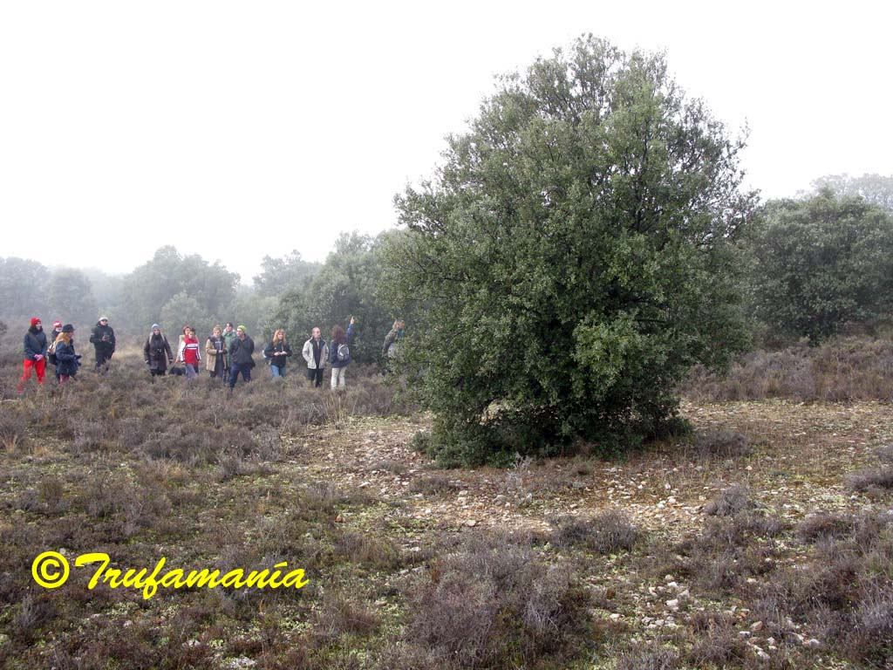

THROUGH THE NOSE
 It arrived hermetically sealed, hidden in dark soil with a generous, fertile look about it. I decided that stepping out into the sunny garden would be the right way to open my senses before lifting the lid.
It arrived hermetically sealed, hidden in dark soil with a generous, fertile look about it. I decided that stepping out into the sunny garden would be the right way to open my senses before lifting the lid.
With birdsong as a backdrop, I breathed in deeply the aroma concentrated during its journey; mind blank, eyes closed, every receptor primed and ready… and I was suddenly on holiday at the seaside... click here to read more...
THE ISTRIAN TRUFFLE (Tuber magnatum)
 The Croatian peninsula of Istria is located in front of Venice, only 100 km just across the Adriatic sea. It is one of the few places outside Italy where you can find the Tuber magnatum, the most expensive truffle in the world. It was part of the Venetian Republic for a long time, and symbols of this period are the numerous reliefs of winged lions, adorning every corner. ... click here to read more...
The Croatian peninsula of Istria is located in front of Venice, only 100 km just across the Adriatic sea. It is one of the few places outside Italy where you can find the Tuber magnatum, the most expensive truffle in the world. It was part of the Venetian Republic for a long time, and symbols of this period are the numerous reliefs of winged lions, adorning every corner. ... click here to read more...
THE HUNGARIAN SWEET TRUFFLE (Mattirolomyces terfezioides)
 No, it's not a chocolate truffle. Mattirolomyces terfezioides (=Terfezia terfezioides) is a very sweet hypogeous fungus (fungi that ripen completely underground), as sweet as saccharin. Hungary is the only country where they occur frequently, in Robinia pseudoacacia forest. Fruiting period lasts from August to November. Popular name is “homoki szarvasgomba”. ... click here to read more...
No, it's not a chocolate truffle. Mattirolomyces terfezioides (=Terfezia terfezioides) is a very sweet hypogeous fungus (fungi that ripen completely underground), as sweet as saccharin. Hungary is the only country where they occur frequently, in Robinia pseudoacacia forest. Fruiting period lasts from August to November. Popular name is “homoki szarvasgomba”. ... click here to read more...
THE FALSE TRUFFLES
 People often ask us about "truffles" found around yards and gardens or in the countryside. They appear partially buried (hypogeous) or superficial. They are sometimes true truffles, but most of the time are false truffles, from a gastronomic point of view and and accepted as true truffles only those belonging to the genus Tuber. Even some of these false truffles can be toxic... click here to read more...
People often ask us about "truffles" found around yards and gardens or in the countryside. They appear partially buried (hypogeous) or superficial. They are sometimes true truffles, but most of the time are false truffles, from a gastronomic point of view and and accepted as true truffles only those belonging to the genus Tuber. Even some of these false truffles can be toxic... click here to read more...
If you think you have found a truffle and you have doubts, you can send us photos showing both the interior and exterior of the specimen to antonio@trufamania.com. Never eat any fungus unless you are absolutely sure of its identity!
CHRONICLE OF A TRUFFLE HUNTING DAY

On Saturday the 12th of December I had the good fortune of taking part in a truffle hunting day. Despite the bitter cold that accompanied us on the journey from Madrid to Guadalajara, the day turned out to be truly magnificent.We met at 11:00 in the morning at a forest track leading to the woodland where our adventure would begin... click here to read more...
THE SEDUCTRESS OF THE OAK GROVES
 Legend has it that, in the dawn of time, the son of Thunder and the daughter of Lightning lay together upon the floor of a holm oak forest. From their union were born the Mycos — soft, cotton-white beings. The Mycos attended the summit of the Three Kingdoms, presided over by Phoebus, the Great Provider. But Phoebus would only supply the Green-Robed ones... click here to read more...
Legend has it that, in the dawn of time, the son of Thunder and the daughter of Lightning lay together upon the floor of a holm oak forest. From their union were born the Mycos — soft, cotton-white beings. The Mycos attended the summit of the Three Kingdoms, presided over by Phoebus, the Great Provider. But Phoebus would only supply the Green-Robed ones... click here to read more...